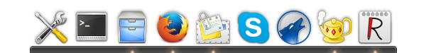
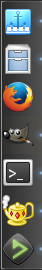

Plank
Dieser Artikel wurde für die folgenden Ubuntu-Versionen getestet:
Ubuntu 16.04 Xenial Xerus
Ubuntu 14.04 Trusty Tahr
Zum Verständnis dieses Artikels sind folgende Seiten hilfreich:
Plank  ist eine minimalistische Anwendungsstartleiste (Dock). Ähnlich wie die Projekte Avant Window Navigator, Cairo-Dock und wbar hat es das Dock von Mac OS X als Vorbild. Der Leitspruch "Plank. Lächerlich einfach." bringt aber gut zum Ausdruck, dass Plank sich darauf konzentriert, nur ein Dock zu sein. D.h., es ist alles vorhanden, was ein Dock braucht und sonst nichts. Es wird von den Entwicklern daher als "das einfachste Dock der Welt" bezeichnet. Wer Docklets und andere Zusatzfunktionen benötigt, der kann auf das auf Plank basierende Docky ausweichen.
ist eine minimalistische Anwendungsstartleiste (Dock). Ähnlich wie die Projekte Avant Window Navigator, Cairo-Dock und wbar hat es das Dock von Mac OS X als Vorbild. Der Leitspruch "Plank. Lächerlich einfach." bringt aber gut zum Ausdruck, dass Plank sich darauf konzentriert, nur ein Dock zu sein. D.h., es ist alles vorhanden, was ein Dock braucht und sonst nichts. Es wird von den Entwicklern daher als "das einfachste Dock der Welt" bezeichnet. Wer Docklets und andere Zusatzfunktionen benötigt, der kann auf das auf Plank basierende Docky ausweichen.
Plank integriert sich problemlos in verschiedenste Desktop-Umgebungen und zeichnet sich durch seinen geringen Ressourcenverbrauch aus. Die Verwendung eines Composite-Managers für Transparenzeffekte ist nicht zwingend notwendig. Sollte ein solcher nicht aktiviert sein, so wird das Dock automatisch mit einem Standard-Design (Theme) dargestellt. Programmiert wurde Plank mit Vala.

Installation¶
 Plank ist ab Ubuntu 15.04 in den offiziellen Paketquellen enthalten. Folgendes Paket muss installiert werden [1]:
Plank ist ab Ubuntu 15.04 in den offiziellen Paketquellen enthalten. Folgendes Paket muss installiert werden [1]:
plank (universe)
 mit apturl
mit apturl
Paketliste zum Kopieren:
sudo apt-get install plank
sudo aptitude install plank
PPA¶
Die aktuelle Version kann aus dem "Personal Package Archiv" (PPA) [2] der Entwickler installiert werden, das auch ältere Ubuntu-Versionen unterstützt.
Adresszeile zum Hinzufügen des PPAs:
ppa:ricotz/docky
Hinweis!
Zusätzliche Fremdquellen können das System gefährden.
Ein PPA unterstützt nicht zwangsläufig alle Ubuntu-Versionen. Weitere Informationen sind der  PPA-Beschreibung des Eigentümers/Teams ricotz zu entnehmen.
PPA-Beschreibung des Eigentümers/Teams ricotz zu entnehmen.
Damit Pakete aus dem PPA genutzt werden können, müssen die Paketquellen neu eingelesen werden.
Nach dem Aktualisieren der Paketquellen erfolgt die Installation wie oben angegeben.
Bedienung¶

Bei Ubuntu-Varianten mit einem Anwendungsmenü erfolgt der Programmstart [3] über "Zubehör -> Plank". Alternativ kann das Programm mit dem Befehl plank gestartet werden.
Geöffnete Anwendungen werden durch einen kleinen Punkt unterhalb des bzw. neben dem Programmsymbol gekennzeichnet und können über das Kontextmenü  und Linksklick
und Linksklick  auf "Im Dock behalten" als Starter übernommen werden. Um sie wieder zu entfernen, benutzt man entweder das Kontextmenü oder zieht sie bei gedrückter linker Maustaste aus dem Dock heraus. Mehrere offene Fenster derselben Anwendung erreicht man ebenfalls durch auf das Symbol.
auf "Im Dock behalten" als Starter übernommen werden. Um sie wieder zu entfernen, benutzt man entweder das Kontextmenü oder zieht sie bei gedrückter linker Maustaste aus dem Dock heraus. Mehrere offene Fenster derselben Anwendung erreicht man ebenfalls durch auf das Symbol.
In der Grundeinstellung steht das erste Symbol im Dock für Plank selbst. Möchte man das Programm vorzeitig beenden, benutzt man das Kontextmenü des Symbols . Zur Änderung der Reihenfolge innerhalb des Docks kann man Ziehen und Fallenlassen (Drag'n'Drop) bei gedrückter linker Maustaste verwenden.
Einstellungen¶
 Die Konfiguration wird im (versteckten) Ordner ~/.config/plank/ im Homeverzeichnis gespeichert. Alternativ zur grafischen Einstellung über das Programmsymbol ( -> Preferences) im Dock kann man die gut dokumentierte Datei ~/.config/plank/dock1/settings editieren [4]. Einige der am häufigsten nachgefragten Einstellungen sind der folgenden Tabelle zu entnehmen.
Die Konfiguration wird im (versteckten) Ordner ~/.config/plank/ im Homeverzeichnis gespeichert. Alternativ zur grafischen Einstellung über das Programmsymbol ( -> Preferences) im Dock kann man die gut dokumentierte Datei ~/.config/plank/dock1/settings editieren [4]. Einige der am häufigsten nachgefragten Einstellungen sind der folgenden Tabelle zu entnehmen.
| Optionen von Plank | ||
| Parameter | Beschreibung | |
IconSize= | Größe der Programmsymbole (Standard: 48). Bei kleineren oder größeren Werten ändert sich automatisch auch die Größe des Docks. | |
Position= | Position des Docks: 1 = links, 2 = rechts, 3 = oben, 4 = unten (Standard: 4) | |
HideMode= | Ausblenden des Docks: 0 = nicht ausblenden, 1 = intelligentes Ausblenden (wenn verdeckt), 2 = automatische Ausblenden, 3 = bei aktiven maximierten Fenstern ausblenden (Standard: 1) | |
LockItems= | Drag'n'Drop (de)aktivieren. Standard: false (Ziehen und Fallenlassen erlaubt). | |
Designs¶
Neue Designs (Themes) werden in einen Ordner unterhalb von ~/.local/share/plank/themes/ kopiert. Dann ändert man in der Datei ~/.config/plank/dock1/settings die Zeile:
Theme=THEMENNAME
und startet Plank neu. Wie bereits in der Einleitung erwähnt, wird für Themes ein Composite-Manager benötigt.
Problembehebung¶
Plank integriert sich nicht in KDE¶
Plank reagiert unter Umständen (wie auch Audacious) nicht auf die Einstellungen des GTK+-Themes, wenn dieses in den Systemeinstellungen eingestellt wurde. Abhilfe schafft die Einstellung des Designs über LXAppearance.
Links¶
Questions for Plank
- Fragen und Antworten
13 Plank Themes for Elementary OS Freya
- Blogbeitrag, 09/20155 Beautiful Plank Themes
- Blogbeitrag, 07/2011simdock - alternatives Dock, in Entwicklung
Docks und Anwendungsstarter
 Programmübersicht
Programmübersicht
- Erstellt mit Inyoka
-
 2004 – 2017 ubuntuusers.de • Einige Rechte vorbehalten
2004 – 2017 ubuntuusers.de • Einige Rechte vorbehalten
Lizenz • Kontakt • Datenschutz • Impressum • Serverstatus -
Serverhousing gespendet von